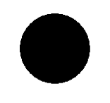

La Maladie d'alzheimer - Projet 3BIM
Présentation du projet :
Dans le cadre d'un projet annuel au sein de notre département Biosciences de l'INSA Lyon, et plus précisément en accord avec notre parcours d'enseignement Bioinformatique et modélisation (BIM), nous avons choisi d'aborder la maladie d'Alzheimer comme thématique centrale autour de laquelle se sont orientées nos recherches. En effet le but de ce projet est de rassembler, par groupe d'étudiants en 3ème année d'école d'ingénieur, un maximun de connaissances afin de pouvoir modéliser numériquement et mathématiquement un phénomène biologique préalablement étudié.
Introduction à la biologie d'Alzheimer
La maladie d'Alzheimer est une maladie neurodégénérative, caractérisée par l'accumulation de deux types de protéines : les protéines Aβ et les protéines Tau. Cette accumulation s'intensifie au cours des stades de la maladie et peut finir par se propager au sein de tout le cerveau.
La protéine Béta-Amyloïde
La protéine béta-Amyloïde est un peptide de 38 à 43 acides aminés, c'est donc une protéine de petite taille, qui est naturellement présente dans notre cerveau et qui diminuerait la communication synaptique entre les neurones. Son action aurait pour effet d'empêcher la capture de choline, composant indispensable à la synthèse d'acétylcholine. L'acétylcholine est quant à elle un neurotransmetteur impliqué dans la mémorisation.

Source de l'image : https://www.medecinesciences.org |
Source de l'image : http://www.ipubli.inserm.fr |
|---|
Cette protéine proviendrait du clivage enzymatique de l'APP (Amyloid Precursor Protein), qui est une protéine transmembranaire que l'on retrouve au niveau de la membrane des neurones. Une fois l'APP clivée, elle peut conduire à deux formes de béta-Amyloïdes : Aβ42 et Aβ40. C’est la forme Aβ42 qui est remarquée en majorité dans les plaques amyloïdes dans le cerveau d’un malade atteint d'Alzheimer. La figure de gauche ci-dessus présente ce qu'il se passe lors du clivage de la protéine APP. D'un côté est représentée la voie non amyloïdogénique, c'est-à-dire la voie qui aurait lieu en temps normal et qui ne conduirait pas à la constitution de plaques amyloïdes. Dans ce cas-là, on observe que l'enzyme \(\alpha \)-sécrétase clive l'APP au milieu de la partie rouge, correspondant en réalité au peptide Aβ. Ainsi, lorsq'une seconde enzyme (la \(\gamma \)-sécrétase) vient cliver le restant de la protéine, la partie libérée dans le milieu extracellulaire est le peptide Aβ sous sa forme Aβ40. Dans la maladie d'Alzheimer, on soupçonne que ce soit la voie amyloïdogénique qui ait lieu. Celle-ci implique d'abord l'enzyme \(\beta \)-sécrétase pour cliver l'APP. Cette enzyme sépare la protéine avant la partie rouge et conserve le peptide Aβ en entier. C'est pour cela qu'après le passage de la \(\gamma \)-sécrétase, c'est le peptide sous sa forme Aβ42 qui est libéré dans l'espace extracellulaire.
La forme Aβ42 ainsi libéré n'est pas stable et va chercher à s'aggréger avec d'autres peptides Aβ pour se structurer en feuillets-β. Comme illustré sur la figure à droite ci-dessus, les feuillets-β, en s'empilant, donneront des oligomères, puis des fibrilles, et enfin à plus grande échelle des plaques amyloïdes. Ce sont ces plaques que l'on observe chez les patients atteints d'Alzheimer. Elles peuvent conduire à une dégénérescence neurofibrillaire (abrégé DNF) ou à une inflammation locale des tissus cérébraux. C'est ainsi que l'accumulation de peptides autour des neurones devient responsable de leur mort progressive. C'est cette accumulation de protéines béta-Amyloïdes autour de la membrane de neurones que l'on avait pour objectif de représenter dans la partie Modélisation de ce projet.
Il est possible que dans les agglomérats initiaux de la maladie, seules les Aβ42 soient présentes. Des tests in vitro ont été réalisés, et les chercheurs ne trouvent pas de différence de présence entre les deux formes de béta-Amyloïdes. Cependant, il faut savoir qu'une plus grande toxicité a été observée pour un ratio Aβ42/Aβ40 plus grand.
La protéine Tau
Tau: « Tubulin Associated Unit ». Le rôle des Protéines Tau est de participer à l'architecture des neurones et à leur stabilité. Lorsqu'elles sont associées aux microtubules, elles permettent la stabilisation de leurs composants au cytosquelette de par leur phosphorylation. Au sein du neurone, les microtubules servent à transporter les matériaux synthétisés par le corps cellulaire vers les terminaisons nerveuses et à en maintenir la forme.
Les pathologies liées à des anomalies de la protéine Tau sont des tauopathies, et engendrent des démences parmi lesquelles se trouve la maladie d’Alzheimer. Une tauopathie se définit par l'accumulation anormale de protéines Tau. Ce mauvais fonctionnement des protéines Tau est lié à un excès de phosphorylation (l'ajout de groupements phosphate), entraînant l'agrégation des protéines entre elles : des amas de protéines Tau se forment. Cela induit une désorganisation des neurones en une dégénérescence neurofibrillaire, qui peut entraîner la mort cellulaire (dégénérescence cellulaire).
C'est pourquoi la protéine Tau fait partie des cibles thérapeutiques pour la recherche de nouveaux traitements contre la maladie d'Alzheimer.
Source de l'image: https://fr.wikipedia.org
La formation d'agrégats :
Dans le cas d’Alzheimer, la béta-Amyloïde s’agrège et se dépose sous forme de plaques d’abord dans l’hippocampe (qui joue un rôle majeur dans la mémoire et le repérage spatial) et dans le lobe temporal (qui joue un rôle dans les fonctions du langage, ainsi que de la mémoire). Puis il s’agrège dans le lobe frontal (mouvement, langage, planification) et pariétal (intégration des informations). On ne sait pas si le nombre de plaques formées joue sur la sévérité de la maladie. Ce serait plutôt la perte de synapses au début de la maladie qui serait important. La protéine Tau, quant à elle, forme des amas de dégénérescences neurofibrillaires.
Les solutions thérapeutiques existantes
Aucun traitement ne permet à l’heure actuelle de guérir de la maladie ou de stopper son évolution. Certains médicaments sont toutefois disponibles sur le marché. Dans les meilleur des cas (malheureusement trop rares), la famille, le patient et le spécialiste vont constater une amélioration, avec une meilleure qualité de vie et des performances cognitives améliorées. Le plus souvent, on observe grâce au traitement un ralentissement dans l'évolution de la maladie et une diminution de certains troubles du comportement.
Deux familles de médicaments sont utilisées pour ralentir le développement des troubles cognitifs associés à la maladie d’Alzheimer :
- Les anticholinestérases : Ces médicaments ont un effet sur l’acétylcholine, substance fabriquée par les cellules nerveuses et qui agit sur la mémoire et l’apprentissage. Elle est ciblée et détruite au cours de la maladie d’Alzheimer. Les anticholinestérases ont alors pour rôle de ralentir la destruction de l’acétylcholine, améliorant ainsi le comportement du malade et ses gestes quotidiens. Les anticholinestérases sont prescrits aux stades léger et moyen de la maladie ;
- Les antiglutamates : Ces molécules agissent sur les récepteurs du glutamate, substance produite en excès par les cellules nerveuses des malades atteints d’Alzheimer, entraînant ainsi la destruction d’autres cellules, les cellules réceptrices. Les antiglutamates bloquent l’interaction du glutamate avec les cellules réceptrices, ce qui ralentit la perte de mémoire et le déclin des fonctions cognitives. Les antiglutamates sont prescrits aux stades moyen et sévère de la maladie.
Enfin, les thérapies non-médicamenteuses se développent de plus en plus : elles permettent d’améliorer le confort et le bien-être des malades et de freiner le développement des troubles.
Modélisations
I - Choix du type de modélisation : utilisation de l’individu centré
Une fois décidés de travailler sur la propagation de la maladie dans le cerveau, nous avons fait de nombreuses recherches sur les modélisations envisageables, notamment sur les modélisations de neurones. Ce qui nous a amenés aux réseaux de neurones. Nous avons orienté nos recherches dans cette direction mais nous sommes aperçus que, malgré son nom, cette technique n’est pas nécessairement adaptée pour modéliser le cerveau, sans compter sa complexité. Etant à court d’idée, nous avons songé à demander de l’aide à des personnes connaissant le sujet. Une chance pour nous : de nombreux professeurs du département Biosciences ont travaillé sur Alzheimer. Nous avons contacté Laurent PUJO-MENJOUET que nous connaissions bien. Pendant une discussion, il nous a conseillé de nous tourner vers les modélisations automate-cellulaire et individu centré.
La modélisation de l’automate cellulaire présente une grille de cellules pouvant prendre différents états. Leur état est amené à évoluer au cours du temps en répondant à certaines règles (ou fonctions d’état) identiques pour chaque cellule, reliées à l’état de leurs cellules adjacentes. Les règles s’appliquent à chaque itération temporelle. Un exemple célèbre de ce type de modélisation est le jeu de la vie.
Vidéo : Exemple de jeu de la vie codé en java (openjdk-11)
Les cellules peuvent prendre deux états distincts : vie ou mort. Les règles sont les suivantes : “une cellule morte possédant exactement trois voisines vivantes devient vivante (elle naît) ; une cellule vivante possédant deux ou trois voisines vivantes le reste, sinon elle meurt.” Malgré sa simplicité, le jeu de la vie intéresse beaucoup de par les différents comportements pris par les cellules en fonction de l’état initial (structures stables, canons, vaisseaux…)
L’individu centré est un système comportant des entités autonomes, ou individus, qui disposent d’informations, que nous appelons perceptions, sur leur environnement de façon localisée. De nouveau, certaines règles sont appliquées, ici aux individus. Elles vont les conduire à une action sur leur environnement. Il peut s’agir par exemple de déplacements ou d’affecter d’autres individus. De nombreux exemples existent, bien qu’aucun, sans doute, ne soit aussi célèbre que le jeu de la vie. Citons MobiSim, une modélisation pour l’analyse géographique et la mobilité des hommes.
Nous avons choisi l’individu centré. En effet, il nous a semblé plus pertinent de considérer les protéines comme des agents, car celles-ci se déplacent dans le cerveau et s’agrègent. Avec un automate cellulaire, la grille aurait représenté le cerveau. Les différents états des cellules auraient été leur niveau de dégradation ou la présence d’agrégats à l’intérieur. Nous aurions assisté à une diffusion de la maladie. Avec une modélisation individu centré, il est à la fois possible d’assister à une diffusion de la maladie, mais en plus, d’avoir une idée précise de la façon dont se forment les agrégats. Nous pouvions aussi considérer les neurones comme d’autres individus qui produisent des protéines, ou encore d’autres éléments : par exemple, imaginer un produit aux effets divers sur les protéines (ralentissement, empêchement de s’agréger) et en observer les conséquences, ce qui pourrait aider dans l'élaboration d’un médicament. En résumé, l’individu centré nous donnait une plus grande liberté dans la modélisation, c’est pourquoi nous nous sommes tournés vers lui.
Nous avons choisi de nous concentrer sur les protéines béta-Amyloïdes et laisser de côté les protéines Tau. Ainsi, les béta-Amyloïdes et les neurones seraient les individus de notre modélisation. Quels comportements souhaitions-nous implémenter ?
Les protéines , représentées par des sphères de couleur, sont capables de se déplacer sur le “terrain”, dont nous explicitons les particularités plus loin. Leurs déplacements sont globalement rectilignes mais peuvent comporter de légères courbures aléatoires. Elles possèdent une faible probabilité de devenir spontanément infectieuses. Quand elles touchent d’autres protéines, elles se collent à elles et transmettent leur infection le cas échéant. Elles possèdent une faible probabilité de se détacher spontanément . Quand elles s’agrègent, leur vitesse de déplacement diminue (plus l’agrégat est important, plus leur vitesse ralentit). Quand elles touchent un neurone, elles affectent son état.
Les neurones, également représentés par des sphères, sont immobiles sur le terrain. A chaque itération, ils possèdent une probabilité d’expulser une nouvelle protéine béta-Amyloïde non infectée. Ils possèdent une échelle d’états, allant de parfaitement fonctionnels à non fonctionnels. Au départ, ils sont parfaitement fonctionnels. Lorsqu’ils ne sont plus fonctionnels, ils ne peuvent plus expulser de nouvelles protéines. Ce sont les béta-Amyloïdes qui influencent leur état.
Le terrain. Ce que nous appelons le terrain correspond ici à la matrice extracellulaire du cerveau dans laquelle se déplacent les protéines. Le problème de conception majeur vient des bords. Nous pouvons les considérer soit comme des frontières infranchissables pour les protéines ou, au contraire, considérer que l'on ne traite qu'une zone restreinte du cerveau. Dans ce second cas, certaines protéines peuvent s’échapper de la zone et accéder au restant du cerveau, tandis que d'autres peuvent rentrer dans la zone modélisée. Le premier cas pose problème d’un point de vue de design : il est difficile d’imaginer que les protéines rencontrent ainsi des murs. Bien que le cerveau soit limité, la taille des protéines est très faible devant le volume du cerveau, et la fréquence de rencontre avec des “murs” est sans doute infime. Le deuxième cas pose problème d’un point de vue implémentation : si nous considérons que les protéines peuvent quitter le terrain de la simulation, nous avons peu de chances de les observer s’agréger (à moins d’une taille de terrain énorme). Même si de nouvelles protéines peuvent entrer sur le terrain, cela ne suffira pas, car le problème vient des agrégats qui quittent le terrain. Nous avons pensé à poser une probabilité qu’un agrégat entre dans le terrain à chaque itération, mais cela allait à l’encontre de l’un des objectifs de notre modélisation : observer comment se forment les agrégats. Une solution alternative était de considérer le terrain comme une coupe 2D non plane du cerveau. Prenons l’exemple d’une coupe cylindrique, que nous couperions dans le sens de la hauteur et mettrions à plat.
Dans ce cas, les protéines allant sur l’un des bords en pointillés se retrouvent de l’autre côté à la même hauteur. Là encore, nous rencontrons un problème de design : est-il vraiment pertinent d’envisager notre terrain comme une coupe non plane du cerveau ? En réalité, notre groupe ne tombait pas d’accord sur la meilleure possibilité. Avant que le projet s’interrompe, nous considérions ce dernier cas pour des raisons pratiques, mais ce choix était amené à changer.
Nous avons pensé à ajouter des individus correspondants à des substances hypothétiques, qui pourraient par exemple ralentir les béta-Amyloïdes, afin de découvrir quelles influences seraient bénéfiques pour le malade, dans l'optique de concevoir un médicament. Néanmoins, nous avons convenu que nous devions d’abord achever la modélisation des éléments précédents avant de rajouter de nouveaux types d’individus, et à condition que le délais restant soit suffisant. L’interruption du projet ne nous en a pas donné le temps.
II- Avec le logiciel Netlogo :
Netlogo © est un logiciel gratuit et opensource muni de son propre language de programmation ainsi que d'un environnement de modélisation permettant de créer des systèmes multi-agents allant du modèle proies - prédateurs, au modèle simulant la construction d'un nid d'abeille ou bien le développement d'une tumeur. Ce logiciel nous a été suggéré par notre tuteur de projet M. Pujo-Menjouet. Le gros point fort de NetLogo © est qu'il est livré avec une très grande bibliothèque de modèles tous aussi variés les uns que les autres, nous permettant ainsi de nous en inspirer afin de ce très vite comprendre et assimiler la syntaxe du language NetLogo et d'en ressortir une ébauche de premier modèle individu-centré, mettant en relation un neurone et les proteines béta-Amyloïdes qui s'agrègent autour de lui. Un autre point fort de Netlogo © est que son interface graphique est très intuitive à utiliser, ainsi il est très simple de mettre en relation le code et l'interface graphique, permettant notament de rajouter ou de modifier des paramètres en cours de simulation via l'interface utilisateur grâce à des curseurs ou des boutons.

Source de l'image : https://ccl.northwestern.edu/netlogo/
Simulation avec NetLogo © : |
|---|
Visualisation du code NetLogo © :
breed [AB a-AB]
breed [neurone a-neurone]
AB-own [leader turn-amount]
to setup
clear-all
setup-neurone
create-AB nb-AB-ini?
[ set color red
set shape "circle"
setxy random-xcor random-ycor
rt random-float 360
;; initially, every node leads its own cluster of one
set leader self ]
reset-ticks
end
to go
;; All the leaders choose turn amounts
ask AB with [leader = self] [
set turn-amount random 10 - random 10
]
;; All nodes follow their leaders
ask AB [
rt [turn-amount] of leader
fd 0.1
]
;; Here's the tricky part. We check whether any pairs
;; of clusters are touching, and if they are, we merge them.
ask AB [
let candidates AB in-radius 1 with [leader != [leader] of myself]
if any? candidates [
create-links-with candidates [ hide-link ]
ask candidates [ merge ]
]
]
if random 1000 < 3 [
create-AB 1 [
set color yellow
set shape "circle"
setxy 0 0
rt random-float 360
set leader self
]
]
tick
end
;; This is a recursive procedure -- it calls itself.
;; That way the new leader propagates through the entire
;; cluster.
to merge ;; node procedure
;; First this node merges.
set leader [leader] of myself
set heading [heading] of leader
set color blue
;; Then any neighboring nodes that haven't merged yet
;; merge.
ask link-neighbors with [leader != [leader] of myself]
[ merge ]
end
to setup-neurone
create-neurone 1
[
setxy 0 0
set color blue + 1
set size 4
set shape "leaf"
]
end
III- Passage sur python
Nous avons défini trois classes python : la classe Protein, Neuron, et BrainView.
La classe Protein :
La classe Protein possède les attributs suivants :
- x et y, ses coordonnées spatiales
- r, son rayon
- direction, qui correspond à l’angle formé avec l’axe des x de la fenêtre de visualisation dans le sens des aiguilles d’une montre
- leader, qui est la Protein suivie par la Protein courante. Lors de son initialisation, le leader de la Protein est elle-même. L’intérêt de cet attribut, inspiré par l’implémentation sur NetLogo ©, était d’avoir une Protein qui imposerait la direction à toutes celles qui composent le même agrégat qu’elle (et qui l’aurait comme leader).
- color, qui correspond à son état : normal ou infectieux. Lors de son initialisation, son état est normal, soit color == “yellow”. Dans son état infectieux, color ==”red”.
Parmi les méthodes importantes, on trouve :
- move : modification des x et y de la Protein grâce aux fonctions cos et sin appliquées au leader
- hook : si deux Protein se touchent, elles se collent. L’une devient leader. Nous pensons que les problèmes d’agrégations viennent de là. En effet, lorsque deux agrégats se croisent, il faut que toutes les Protein d’un des agrégats prennent comme leader le leader de l’autre agrégat. Cette attribution n’est pas totale.
- degrade : prend en argument un Neuron. S’ils se touchent, l’état du Neuron gagne 1.
Visualisation du code Python de la classe Protein :
import math as m
import cerveau as c
import neurone as n
import random as r
class Protein():
def __init__(self, r, x, y, angle):
self.r=r #r est le rayon de la proteine
self.color="yellow" #deux couleurs possibles : yellow = etat normal, red = etat infectieux de la proteine
#coordonnees de la proteine :
self.x=x
self.y=y
self.leader=self #definie le leader (la proteine suivi) comme elle meme
self.led=self #la protein qui la suit est elle meme
self.direction=angle #la proteine se deplace selon un angle en degres
def change_state(self, protein):
#la proteine a une chance de changer d'etat toute seule et accrue si elle touche une proteine
if r.random()< 0.0001:
self.color="red"
if self.distance(protein)<=self.r+protein.r and protein.color=="red":
#si une proteine en touche une autre qui est rouge, elle devient rouge
self.color="red"
def move(self, c):
if r.random()< 0.000001:
self.leader.leader.direction+=r.randint(1,5)
self.direction=self.leader.leader.direction
#la proteine se deplace selon un angle (entier), elle doit suivre le leader
self.x=self.x+int(10*m.cos(m.degrees(self.leader.leader.direction)))
self.y=self.y+int(10*m.sin(m.degrees(self.leader.leader.direction)))
if (self.x < 0) :
self.x = c.width
elif (self.x > c.width) :
self.x = 0
if (self.y < 0) :
self.y = c.height
elif (self.y > c.height) :
self.y = 0
def hook(self, protein):
#deux proteines (d'etat evil seulement je crois) peuvent s'accrocher
if self.distance(protein)<=protein.r+self.r :
self.leader.leader=protein.leader
self.leader=protein.leader
self.direction=protein.leader.direction
def detach(self):
#une proteine accrochee ont une probabilite de se decrocher
#ce qui revient a tranformer le leader en elle meme
if r.random()< 0.0000000000001:
self.leader=self
def distance(self, cercle): #mesure la distance entre la proteine
#et une autre proteine ou le neurone
return m.sqrt((self.x-cercle.x)*(self.x-cercle.x)+(self.y-cercle.y)*(self.y-cercle.y))
def degrade(self, neuron): #neuron est le tableau de neurones de brain
#on test si la proteine est assez proche d'un neurone
for n in neuron:
if self.distance(n)<=self.r+n.r and n.state< 10: #je fixe le maximum de degradation a 10 mais on peut changer
n.state+=1
#mais si une proteine passe sur le neurone, il faut prevoir qu'elle ne se deplacera pas pareil
if __name__=='__main__' :
p=Protein(5,0,0,60)
neuron=[n.Neuron(10,20,1)]
p.degrade(neuron)
Tprot=[]
for i in range(10):
#juste pour tester si les proteines s'accrochent comme il faut
Tprot.append(Protein(20,i,i,r.randint(0,360)))
p.run_prot(Tprot)
La classe Neuron :
 La classe Neuron possède les attributs suivants :
- x, y et r sont analogues aux attributs éponymes de Protein
- state, l’état du Neuron, entier pouvant varier de 0 à 10, 0 étant un état fonctionnel et 10 non-fonctionnel. En réalité, le choix de l’échelle était encore en réflexion, la prendre de 0 à 10 était temporaire.
Méthode :
La classe n’avait qu’une méthode : apparition_protein(self, Tprotein). Tprotein est un tableau de protéine. Selon une certaine probabilité, la méthode ajoute une protéine qu’elle crée au tableau ou non.
Visualisation du code Python de la classe Neuron :
import time as t
import random as r
import proteine as p
import cerveau as c
class Neuron():
def __init__(self, r, x, y):
self.r=r #r est le rayon du neurone
self.state=0 #l'etat du neurone qui varie de 0 a... 10 ? 10 est le plus grave
#coordonnees du neurone :
self.x=x
self.y=y
self.proteins=[] #tableau de proteines
self.color="black"
def apparition_protein(self, Tprotein): #fait apparaitre une proteine selon une certaine probabilite
if r.random() < 0.1:
#ajout d'une proteine de rayon 5 et des memes coordonnes que le neurone, se deplacant dans une direction aleatoire
Tprotein.append(p.Protein(Tprotein[0].r, self.x, self.y, r.randint(0,360)))
if __name__=='__main__' :
neuron=Neuron(20,5,60)
brain=c.BrainView(400,400)
neuron.apparition_proteine(brain)
La classe BrainView :
Elle hérite de la classe Canvas (de tkinter). Elle possède en plus les attributs suivants :
- neuron : un tableau de Neuron
- TabProtein : un tableau de Protein
Visualisation du code Python de la classe BrainView :
import tkinter as tk
import time as t
import neurone as n
import proteine as p
import random as r
class BrainView(tk.Canvas):
def __init__(self,wi, he):
self.fenetre=tk.Tk()
tk.Canvas.__init__(self,self.fenetre,width=wi+50, height=he+50)
self.pack()
self.create_rectangle(0,0,wi,he,fill='white')
self.width=wi
self.height=he
self.neuron=[] #definition d'un tableau de neurones
self.TabProtein=[]#definition d'un tableau de proteines
self.time=t.time()
def draw_neurone(self, n):
self.create_oval(n.x,n.y,n.x+2*n.r,n.y+2*n.r,fill=n.color)
def draw_proteins(self, p):
self.create_oval(p.x,p.y,p.x+p.r*2,p.y+p.r*2,fill=p.color)
def run_protein_and_neuron(self): #on fait toutes les actions sur les neurones et proteines
for n in self.neuron:
n.apparition_protein(self.TabProtein)
self.draw_neurone(n)
for i in range(len(self.TabProtein)):
self.TabProtein[i].detach()
for j in range(i+1,len(self.TabProtein)):
self.TabProtein[i].hook(self.TabProtein[j])
self.TabProtein[j].hook(self.TabProtein[i])
self.TabProtein[i].change_state(self.TabProtein[j])
self.TabProtein[j].change_state(self.TabProtein[i])
self.TabProtein[i].move(self)
self.draw_proteins(self.TabProtein[i])
def myfunction():
brain.delete('all') #truc qui efface les objets enregistres par tkinter, ca evite les ralentissements
brain.create_rectangle(0,0,brain.width, brain.height, fill='white')
brain.run_protein_and_neuron()
brain.fenetre.after(1, myfunction) #myfuncton est rappelee toutes les 10 ms
if __name__=='__main__':
w=800
h=800
brain=BrainView(w,h)
for _ in range(100):
#juste pour tester si les proteines s'accrochent comme il faut
brain.TabProtein.append(p.Protein(10,r.randint(300,500),r.randint(300, 500),r.randint(0,360)))
brain.neuron.append(n.Neuron(50,100,200))
myfunction()
brain.fenetre.mainloop()
Difficultés rencontrées et non résolues lors de l’implémentation :
La difficulté majeure venait de l’agrégation. En effet, les protéines d’un amas doivent se déplacer simultanément. Pour résoudre ce problème, nous avons eu l’idée de considérer une Protein leader qui est suivie par les autres. Ce faisant, nous sommes parvenus à observer des protéines s’agréger. Néanmoins ce n’était pas parfait. Il arrivait que des amas ne s’agrègent pas en se touchant, ou au contraire, qu’ils s’agrègent en ne se touchant pas tout à fait. Les raisons n’étaient pas parfaitement connues mais vraisemblablement liées à l’attribution du leader pour chaque Protein. Nous avons eu l’idée d’ajouter une classe Agregat qui puisse résoudre ces problèmes, mais nous n’étions pas certains de son efficacité. Là encore, la confinement ne nous a pas laissé le temps d’explorer plus loin l’idée, ou de retravailler simplement l’attribution du leader chez les protéines.
Une autre difficulté venait de la mémoire utilisée. En effet, le nombre de protéines étant amené à être imposant, les calculs demandaient du temps. Sur les ordinateurs de l’INSA, cela ne posait pas de problèmes mais sur nos ordinateurs personnels moins puissants, une cinquantaine de protéines commençait à faire beaucoup.
IV- Avec Python 3 :
Première version : |
Deuxième version : |
|---|
Remarque : sur ces vidéos, un seul neurone a été implémenté car nous nous concentrions avant tout sur l'agrégation des protéines. Bien sûr, nous aurions rajouté des neurones une fois le code satisfaisant. De plus, la taille des neurones, des protéines, et les probabilités qu'une protéine change d'état étaient fixés arbitrairement pour l'instant. Le paramétrage était prévu une fois le code fonctionnel et à l'aide des modélisations mathématiques que nous allons vous présenter.
Mathématiques
Afin de modéliser la dispersion des protéines dans le cerveau, nous avions besoin de données biologiques et d’un modèle mathématique de diffusion. Pour cela, nous nous sommes basés sur le travail de Martin Andrade-Restrepo, Paul Lemarre, Laurent Pujo-Menjouet, Leon Matar Tine et Sorin Ionel Ciuperca, consigné dans un article publié dans la revue ESAIM: Proceedings and Surveys en 2019. Cet article, intitulé Modeling the spatial propagation of Aβ oligomers in Alzheimer’s disease, nous a apporté des informations tant sur la biologie d’Alzheimer que sur les mathématiques qui régissent le comportement de la maladie. Nous allons ici en faire une brève vulgarisation, afin d’expliquer comment nous avions planifié notre modèle.
Le modèle proposé dans cet article s’intéresse uniquement aux oligomères d’A\(\beta\) et à leur propagation spatiale. Il est concentré sur les stades précoces de la maladie, c’est-à-dire qu’on n’observe pas encore de plaque de fibrilles. Enfin, vu la complexité du modèle, il est restreint à quelques neurones seulement. Cependant, cela est cohérent avec la réalité biologique d’un stade précoce de la maladie.
Hypothèses du modèle et formulation
Considérons d’abord la logique du modèle. On commence par définir le processus chimique étudié :

On détermine un domaine \(\Omega \) avec une limite \( \Gamma \), dans lequel on représente \(N \in {\displaystyle \mathbb{N} } \) neurones \( \omega _1\),\(\omega _2\),...,\(\omega _N\) (représentés par des disques, voir schéma). Ces neurones produisent des monomères A\(\beta\) à un taux \(\lambda\), au niveau de leur membrane notée \(\delta \omega _k\), \(k = 1,2,...,{\displaystyle \mathbb {N} }\). Le taux de production des monomères est constant le long d’une membrane, mais varie selon son activité : ce taux est uniforme pour un même neurone mais varie dans le temps. Les monomères présents dans le domaine \(\Omega\) sont dégradés ou évacués par le fluide cérébro-spinal à un taux \(\delta\).
Biologiquement, les monomères s’assemblent d’abord en proto-oligomères, puis en oligomères. Les proto-oligomères sont de petits polymères instables qui grossissent par polymérisation à un taux \(r_i\) (à taille \(i\)) et qui perdent des monomères à un taux \(b\). Les proto-oligomères peuvent également se fragmenter: on considère en fait que toutes les liaisons à l’intérieur d’un proto-oligomère ont la même probabilité de se briser; la dépolymérisation peut donc conduire à l’obtention d’un polymère et d’un monomère ou de deux polymères.
On obtient que le taux de fragmentation augmente avec la taille \(i\) du polymère : \(\beta \times (i−1)\) ; et que la probabilité d’obtenir n’importe quel polymère de taille inférieure à \(i\) lors d’une fragmentation est uniforme (par exemple, pour un oligomère de taille 8, on a autant de chance d’obtenir un polymère de taille 5 et un de taille 3, qu’un de taille 6 et un de taille 2, etc.).
Cela s’écrit \(K(i,j)=\frac{1}{j-1}\mathbb{1}_{[1\leq i\leq j-1]}\).
Ce noyau de fragmentation vérifie les propriétés de symétrie, de conservation de la masse et de probabilité du noyau. On utilise les propriétés de ce noyau parce que cela simplifie l’équation de la fragmentation. La vitesse de fragmentation de la taille j à la taille {i} (donc \(j>i\)) s’exprime par \(2\beta (j)K(i,j) = 2 \beta\) pour \(1 \leq i \leq j-i\). L’équation obtenue est une équation de polymérisation-fragmentation.
Enfin, une fois que les proto-oligomères ont atteint une taille critique \(i_0\), ils deviennent des oligomères : ils sont alors très stables et n’échangent plus de monomères avec le système. Ce sont ces oligomères qui détruisent les neurones.
On s’intéresse ensuite au processus qui se déroule à l’échelle des polymères.
Chaque polymère se déplace à une vitesse différente selon sa taille, notée \(D_1\) pour un monomère (donc un polymère constitué d’un seul élément), puis \(D_2\), \(D_3\)...jusqu’à \(D_{i_0}\) pour les oligomères. Plus un polymère est petit, plus il se déplace rapidement.
Les oligomères sont toxiques pour un neurone lorsqu’ils en sont assez proches. On définit donc un périmètre de rayon \(\epsilon\) autour de la membrane de chaque neurone. Les monomères sont produits par les neurones, mais cette production ralentit lorsque les neurones meurent. On fixe un taux de production maximum \(\lambda_0\), et un taux de production minimum nul pour les neurones morts. Ce taux décroît, selon le modèle suivant:
\(\frac{d\lambda_k}{dt} = - \tau \lambda \int_{\sum_{k}^{\epsilon}}\mu(x,t)dx \), où \(\tau\) représente la toxicité de l’oligomère pour le neurone.
On considère que les neurones peuvent uniquement dégénérer et ne peuvent pas se régénérer: dans cette simulation, il y a toujours moins de neurones vivants en fin de simulation que dans la situation initiale.
Le modèle suit la condition aux limites de Neumann. On considère que les limites de l'ensemble \(\Omega\) portent une condition d’absorbtion, c’est-à-dire que les oligomères disparaissent aux limites.
Formulation mathématique
Selon les variables définies précédemment, on définit différents systèmes qui permettent la définition du système final. Sans détailler les étapes préliminaires, nous allons présenter ci-après le système final, écrit sous la forme d’une équation de réaction-diffusion. Ce système est issu de la combinaison de plusieurs systèmes d’équations différentielles partielles, qui ont ensuite été adaptés aux simulations numériques : ils ont été simplifiés afin de pouvoir travailler avec des éléments finis.
Nous obtenons donc le système de réaction-diffusion suivant:
$$
\left \{
\begin{array}{l r c l}
\forall i \in {1, …, i_0}, & \frac{\delta \mu_i}{\delta t} & = & D_i\Delta\mu_i + F_i( \mu_1,...,\mu_{i_0} ), \\
\forall i \in {1, …, i_0}, & D_i \nabla \mu_i \cdot \vec{n}|_{\Gamma} & = & - \gamma \mu_i, \\
\forall i \in {2, …, i_0}, & D_i \nabla \mu_i \cdot \vec{n}|_{\delta\omega_k}=0 & \text{and} & D_1\nabla\mu_1\cdot\vec{n}|_{\delta\omega_k}=\lambda_k(t).
\end{array}
\right.
$$
Les facteurs \(F_i\) sont définis tels que:
\(F_1(\mu_1, \ldots,\mu_{i_0}) = -\, \delta \mu_1 \,+\,b \sum_{j=3}^{i_0-1} \mu_j \, + \, 2\beta \sum_{j=2}^{i_0-1} \mu_j \, - \, \sum_{j=2}^{i_0-1} r_j\mu_j\mu_1\),
\(F_2(\mu_1, \ldots,\mu_{i_0}) = b\mu_3 - r_2\mu_2\mu_1 - \beta\mu_2 + \,2\beta \sum_{j=3}^{i_0-1} \mu_j \),
\(F_i(\mu_1, \ldots,\mu_{i_0}) = b\mu_{i+1}-b\mu_i+r_{i-1}\mu_{i-1}\mu_1 - r_i\mu_i\mu_1 - \beta(i-1)\mu_i+2\beta\sum_{j=i+1}^{i_0-1}\mu_j\)
\(F_{i_0 -1}(\mu_1, \ldots,\mu_{i_0}) = -\,b\mu_{i_0-1} \,+ r_{i_0-2}\,\mu_{i_0-2}\,\mu_1\,-\, r_{i_0-1}\,\mu_{i_0-1}\,\mu_1 - \beta(i_0-2)\mu_{i_0-1}\),
\(F_{i_0}(\mu_1, \ldots,\mu_{i_0}) = r_{i_0-1} \,\mu_{i_0-1}\,\mu_1\).
Ces systèmes d’équations sont assez impressionnants, et nous avons donc pris le temps de nous arrêter dessus pour comprendre leur fonctionnement, et pouvoir ainsi les adapter aux modélisations.
Le premier système se résume à trois équations, qui correspondent respectivement à la variation de densité du polymère considéré, et aux conditions aux limites \(\Gamma\) et \( \delta\omega_k\).
Nous allons donc détailler la première équation, \( \forall i \in\) {1, …, \( i_0\)}, \( \frac{\delta \mu_i}{\delta t} = D_i\Delta\mu_i + F_i( \mu_1,...,\mu_{i_0} )\), et les variations induites par le facteur \(F_i\).
Les différentes variations pour les valeurs de \(i\) possibles suivent toutes le même modèle: elles traduisent la polymérisation, la dépolymérisation et la fragmentation des polymères qui produisent ou détruisent des polymères de taille \(i\). Nous allons nous pencher ici sur l’exemple de \(F_1\) pour mieux visualiser cette notion.
Nous posons \(\; F_1(\mu_1, \ldots,\mu_{i_0}) = -\, \delta \mu_1 \,+\,b \sum_{j=3}^{i_0-1} \mu_j \, + \, 2\beta \sum_{j=2}^{i_0-1} \mu_j \, - \, \sum_{j=2}^{i_0-1} r_j\mu_j\mu_1\)
Dans le cas de la formation et de la disparition de monomères, nous considèrons les points suivants:
- La fragmentation de polymères composés de deux monomères ou plus. Entrent ici en compte le taux de fragmentation, \(\beta\), et la somme des densités des polymères de taille \(i\geq 2\). On retrouve également un facteur 2, puisque pour chaque polymère, il y a deux possibilités d’obtenir un monomère par fragmentation. Nous obtenons donc le facteur \(+ \, 2\beta \sum_{j=2}^{i_0-1} \mu_j\) ;
- La dépolymérisation de polymères composés de trois monomères ou plus (en effet, on ne parle pas de dépolymérisation pour un polymère de taille 2, puisque cela revient alors à une fragmentation, et cette fragmentation est déjà comptabilisée dans le facteur vu précédemment). On retrouve la somme des densités des polymères considérés ( \(i\geq 3\) ), et le taux de dépolymérisation \(b \). Cela correspond donc au facteur \(b \sum_{j=3}^{i_0-1} \mu_j \);
- La polymérisation de ces monomères en des polymères de taille \(j\) supérieure: cela correspond à une somme, qui prend en compte le taux de polymérisation spécifique \(r_j\), la densité du polymère obtenu \(\mu_j\) et celle du monomère \(\mu_1\). C’est un facteur négatif, car il correspond à une perte de monomères: \(- \, \sum_{j=2}^{i_0-1} r_j\mu_j\mu_1\);
- Enfin, la variation au stade des monomères comprend en plus la dégradation des monomères, à un taux \(\delta\): cela correspond au facteur \(-\, \delta \mu_1\).
Les fonctions de \(F\) suivent toutes la même logique. Pour tout \(i \geq 2\), nous considérons positivement la dépolymérisation et la fragmentation des polymères de tailles supérieures \( j \geq i\), et négativement la polymérisation et la fragmentation des polymères de taille \(i\). Pour \(i=i_0-1\), les seuls polymères de taille supérieure sont les oligomères, ce sont donc les seuls considérés dans les pertes liées à la polymérisation.
Enfin, pour les oligomères, à \(F_{i_0}\), seule la polymérisation depuis les polymères de taille \(i_0-1\) est considérée. En effet, nous avons vu que les oligomères sont stables, et que par conséquent il n’y a plus de dépolymérisation ou de fragmentation possible. Le nombre d’oligomères est donc nécessairement croissant.
Finalement, cet article nous a permis de définir et d’étudier un modèle mathématique, sur lequel nous voulions nous baser pour améliorer nos modélisations.
L’intégralité de l’article et l’étude des premiers résultats théoriques sont disponibles ici.
Conclusion
Alzheimer est une maladie encore incurable. Nous manquons de connaissance à son sujet, d'où l'intérêt d'un projet portant sur elle. Travailler sur cette maladie fut motivant, tant pour l'apport de connaissances scientifiques que pour l'impression de faire quelque chose d'utile. De plus, nous en tirons des enseignements à la fois sur l'organisation de groupe, du planning, et du travail de recherche, en plus de nous être exercés à la fois dans l'utilisation de python et du HTML/CSS.
L'annulation du projet 3BiM en raison du confinement a été un soulagement, car travailler à distance et avec des outils de travail peu adaptés devenait un poids. Cela ne nous empêche pas de nous sentir frustrés de ne pas avoir mené plus loin le projet, de n'avoir achevé ni l'implémentation ni la paramétrisation du modèle et bien sûr de ne pas avoir de résultat fini à présenter.
Bibliographie / sources :
Agnès Hémar, Christophe Mulle, Maladie d’Alzheimer, peptide b-amyloïde et synapses. Med Sci (Paris), 2011, volume 27, pages 733-736
LeiGhu, Zhefen Guo, Alzheimer's Aβ42 and Aβ40 peptides form interlaced amyloid fibrils. NCBI, 2013
Bêta-amyloïde, Wikipedia, (consulté le 30/01/2020)
Protéine tau, Wikipedia, (consulté le 30/01/2020)
Protéine Tau, Marie-Céline Ray, FUTURA SANTE, (consulté le 30/01/2020)
Maladie d'Alzheimer : enjeux scientifiques, médicaux et sociétaux, INSERM, (consulté le 21/06/2020)
Frédéric Amblard. Comprendre le fonctionnement de simulations sociales individus-centrées: appli-cation à des modèles de dynamiques d’opinions. Autre [cs.OH]. Université Blaise Pascal - Clermont-Ferrand II, 2003. Français
Joanne Hirtzel, « Paramétrage d’un modèle de simulation individu-centré des mobilités résidentielles : enjeux, démarche et résultats », Cybergeo : European Journal of Geography [En ligne], Systèmes, Modélisation, Géostatistiques, document 834, mis en ligne le 06 novembre 2017 (consulté le 30/01/2020)
Jeu de la vie, Wikipedia, (consulté le 02/02/2020)
Guillaume Beslon, Apprivoiser la vie : Modélisation individu-centrée de systèmes biologiques complexes, Liris-CNRS, 2008
Martin Andrade-Restrepo1, Paul Lemarre, Laurent Pujo-Menjouet et al. Modeling the spatial propagation of Aβ oligomers in Alzheimer's disease, ESAIM: Proceedings and surveys, 2019